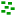

喷枪工具
快捷键：A 或者 Shift+F3
喷枪工具(  )先选定一个对象，然后以喷涂的方式创建不同形式的副本。
)先选定一个对象，然后以喷涂的方式创建不同形式的副本。
操作方法
用选择工具选中一个或多个对象；
切换到喷枪工具(
)；按住鼠标左键不松手然后在画布上拖动鼠标，或者按住鼠标左键不松手然后滚动鼠标滚轮。
激活喷枪工具后，可用空格键来切换喷枪工具和选择工具。
工具选项
( )：拷贝模式。此模式喷枪会生成选中对象的副本，副本独立于原始对象，与原始对象无关。原始对象样式如果发生改变，喷枪生成的对象不会随之改变
( )：克隆模式。此模式喷枪会生成选中对象的克隆副本，副本与原始对象关联，当原始对象的样式发生变化时，克隆副本也发生相应变化，比如描边粗细，或者填充颜色等。
( )：单一路径模式。此模式下，喷枪生成的对象会作为单一路径处理。原始对象可能需要先转换成路径对象，比如文字对象就需要转换成路径后才能使用此模式进行喷枪操作。
( 宽度 )：喷绘的范围。数值是相对值，相对于屏幕可见画布，不是绝对值。可用上下方向键调整数值。
(
 )：压力。激活后如果使用绘图板，则会根据触笔压力来自动调整喷绘范围。此选项对鼠标无效。
)：压力。激活后如果使用绘图板，则会根据触笔压力来自动调整喷绘范围。此选项对鼠标无效。( 数量 )：调整喷枪生成对象的数量。可用上下方向键调整数值。数值越大，数量越多。范围0-100。
(
)：压力。此选项激活后，在使用绘图板时，可以由压力来控制上面的数量参数。对鼠标无效。( 旋转 )：设定喷枪生成对象的最大的随机正负旋转角度，角度是相对于原始对象的。范围0-100，0表示不旋转，100表示最大会旋转正负180度。可用上下方向键调整数值。
( 缩放 )：待更新
(
)：压力。此选项激活后，在使用绘图板时，可以由压力来控制上面的绽放参数。对鼠标无效。( 分散 )：随机分散生成对象的范围，范围0-100，值越大分散得越厉害。可用上下方向键调整数值。
( 焦点 )：范围0-100，数值越大偏离越远。0表示喷枪生成的对象正好在鼠标指针正下方，100表示最远。
( )：在未完全透明的区域执行喷涂操作。激活此选项后才能喷涂非完全透明区域，比如喷涂那些70%透明，或者完全不透明的区域。
( )：在完全透明的区域执行喷涂操作。如果不激活此选项，在喷涂的位置如果有100%透明区域，那么喷涂动作无法生效。比如一个填充为完全透明的对象，或者没有任何对象的画布上，都无法喷涂。
( )：被喷涂区域如果有不同颜色，那么激活此选项后，喷涂生成的对象不会跨颜色放置，仅在单一颜色区域生成。对渐变的行为不明显。
(  )：禁止重叠。激活后，喷涂生成的对象彼此之间不会重叠或交叉。
{kind=link}
{kind=link}
{kind=link}
{kind=link}
{kind=link}
{kind=link}
{kind=link}
{kind=link}
{kind=link}